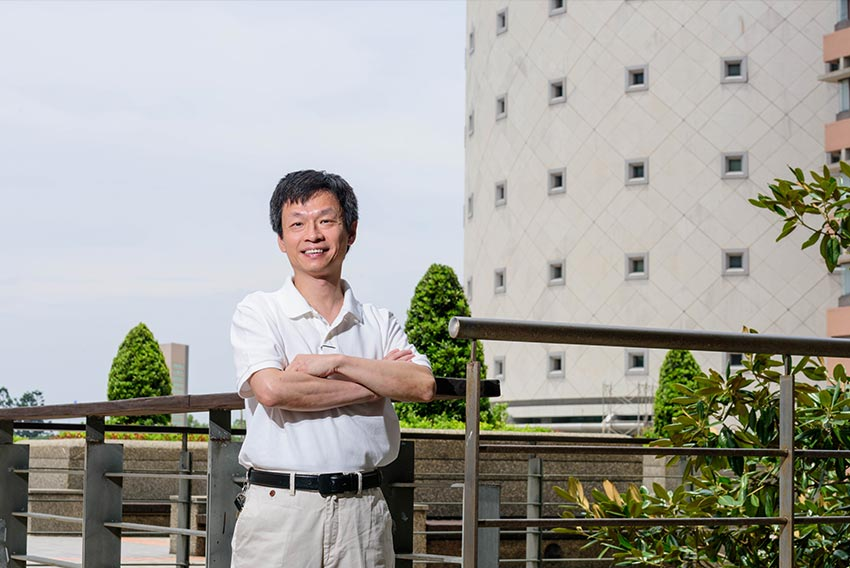
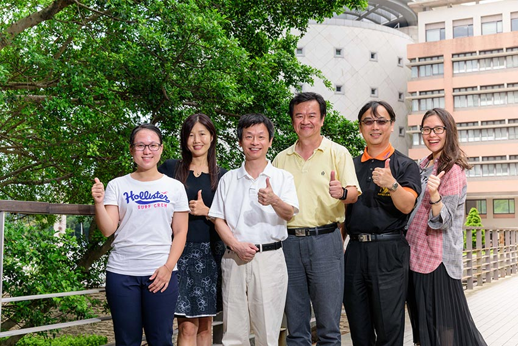

 圖2：長庚大學許光宏副校長兼技合長。
社會實踐是一步一腳印的工程。長庚大學透過「羅卡達山地醫療服務隊」和長庚醫院「華陵社區醫療服務站」服務桃園市復興區已超過十年。該校副校長兼技合長許光宏說：進行實地訪查與場域體驗初期，從當地耆老口中聽到對王永慶先生成立原住民護理專班的感念，讓團隊除了感謝前人福澤外、也倍覺任重道遠。因此該計畫在盤點長庚醫療體系的健康醫療專業和技術後，根據當地居民的長期疾病與健康狀況需求，同時跨校結合長庚大學、長庚科技大學、新生醫護管理專科學校資源，再以整合創新科技和醫聯網模式，建立起科技導入長照的示範模式。從健康照護開始，也把創新教學帶入該場域，讓優化的系統、產品成為團隊和居民之間的橋樑，更進一步讓跨校/跨領域學員、醫療團隊和當地住民啟動良性循環。
他也強調，產業變動快速，跨領域學習成為顯學，而這項計畫也促發了長庚健康智慧虛擬學院的成立，集結了校內八大跨領域學程，以實務教學、場域學習、產業應用為導向來開發技術，使學生學習目標不再是純學術研究，而是產業分流應用專才的培育。於計畫執行中，師生從在復興區的關懷活動發想、提出問題解決方案、規劃黑客松競賽等，校方則從課程引領學生發揮創意，希望未來能帶動地區經濟及生活改變，甚至促發在地創新創業動能。
 圖3：長庚大學計畫團隊整合資源，引領師生落實大學社會責任。
許光宏表示，就醫不便的復興區和醫療可近性高的城鎮地區不同，長庚教師所開發的醫療技術，係針對遠距和居家醫療服務模式，包括心震圖量測系統、手持式超音波，可分別作為初步診斷心血管疾病和肝病的輔助器材；智慧球則可進行早期失能的篩檢。這些遠距醫療技術在2018USR EXPO中，就受到其他團隊的重視，有意推廣這套技術至雲林縣醫療資源缺乏區域，透過數位科技資源彌平城鄉差距。他也相信這些創新醫療照護技術未來有更多機會複製到台灣各地及境外，為日益嚴峻的長照議題盡一份心力。
除了透過遠距醫療為在地老化及偏鄉醫療帶來新模式與新思維外，許光宏也提醒老一輩的生活飲食習慣很難在短期內改變，但透過教育新世代，則有機會影響上一代的不良生活習性、同時也影響了下一代的觀念建立。因此啟動逆世代衛教，利用資訊工具、活潑互動已開始將重要衛生觀念扎根於校園，這也是長庚大學USR重要成果之一。
長庚大學秉持創辦人王永慶先生「取之社會 用之社會」的社會責任理念，長期為偏鄉醫療奉獻，目前更擴大關懷的深度與廣度。過程中留下許多動人的故事與身影，除了醫療專業、科技創新應用與導入，羅馬公路上的原鄉地景彩繪同樣讓人看見學術的美、校園的愛溫柔地蔓延。長庚大學學生在社會責任計畫參與及薰陶下，能成為關心社會、克己盡責之專業技術人才。